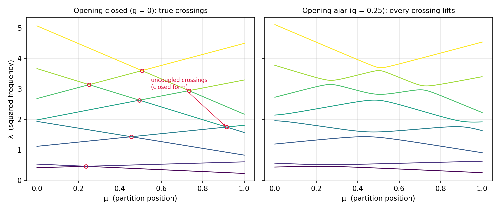
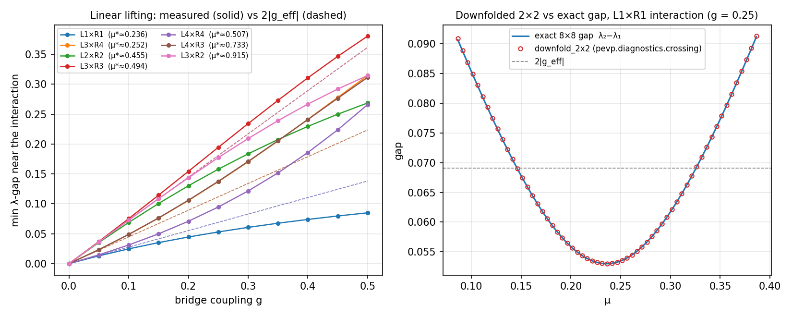
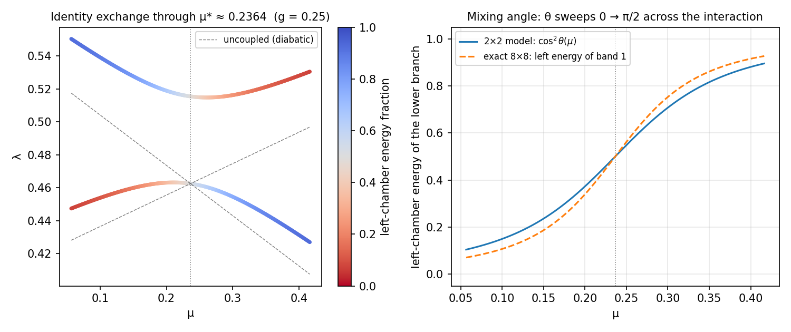
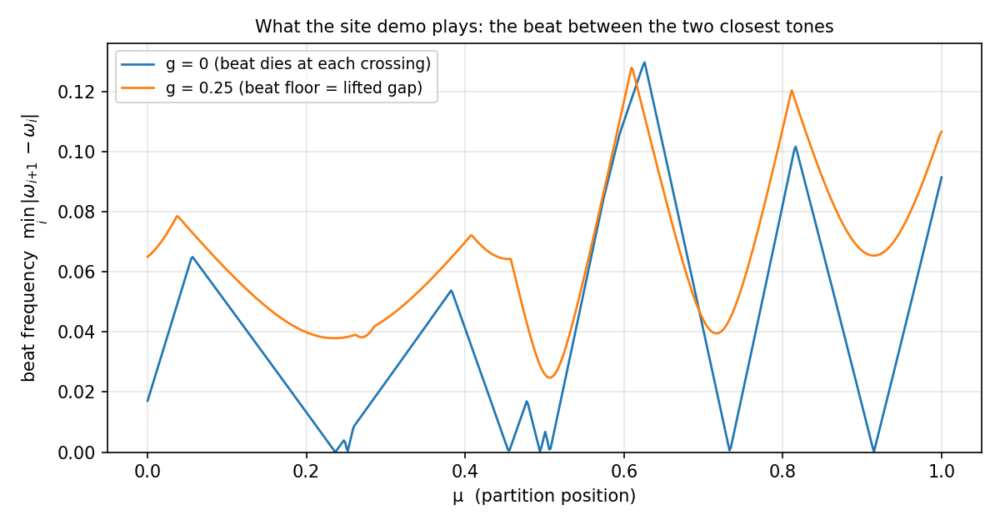

Two-Chamber Resonator — the Minimal Crossing Model
This page is the exact mathematical reference for the interactive resonator demo on the certified-trust pitch site. The demo solves the model below in the browser on every slider move; here the same model is written down precisely — the smallest closed-form setting in which every phenomenon the figure book studies at FE scale (true vs avoided crossings, mode-identity exchange, the failure of sorted-order labels) already appears.
Among the demonstrations this is the one model page: no solver run, no mesh — an 8×8 matrix whose spectrum is known in closed form. The FE-scale counterparts are Persistent Π failures at crossings and the true-vs-avoided diagnostics in crossing classification.
1. The model
Two chambers, each a wall-anchored chain of 4 unit masses connected by identical springs, joined by one bridge spring of stiffness g between the last mass of the left chain and the first mass of the right chain. The partition position \mu \in [0, 1] stiffens one chamber while softening the other:
k_L(\mu) = 1.4 - 0.8\,\mu, \qquad k_R(\mu) = 0.7 + 0.5\,\mu,
and the right chamber carries a constant diagonal offset \delta = 0.15 (a uniform elastic foundation) so the two chambers are never identical. The stiffness matrix is A(\mu, g) \in \mathbb{R}^{8\times 8}, with mass matrix M = I:
A(\mu, g) \;=\; \begin{pmatrix} k_L T & 0 \\ 0 & k_R T + \delta I \end{pmatrix} \;+\; g\,(e_4 - e_5)(e_4 - e_5)^{\!\top}, \qquad T = \begin{pmatrix} 2 & -1 & & \\ -1 & 2 & -1 & \\ & -1 & 2 & -1 \\ & & -1 & 2 \end{pmatrix}.
The rank-one coupling term adds +g to the two bridged diagonal entries and -g to their off-diagonals — exactly a spring between DOFs 4 and 5.
These constants are the reference. The site demo (certified-trust/src/lib/eig.ts::twoChamberMatrix) and the committed figure generator (experiments/generate_two_chamber_figures.py) implement this same matrix entry for entry; each file names the other, so a change in one is a detectable drift, not a silent fork. The demo’s “opening size” slider is g \in [0, 0.5]; figures below use g = 0.25 as the representative open value. The generator’s --check mode asserts every closed form on this page against numpy.linalg.eigvalsh.
2. Uncoupled spectrum and crossing loci (g = 0)
At g = 0 the matrix is block diagonal and each chamber is a Dirichlet chain, diagonalised by discrete sines. With s_n = 2 - 2\cos\!\frac{n\pi}{5} = 4\sin^2\!\frac{n\pi}{10}, n = 1,\dots,4:
\lambda^L_n(\mu) = k_L(\mu)\, s_n, \qquad \lambda^R_n(\mu) = k_R(\mu)\, s_n + \delta, \qquad v_n(i) \propto \sin\frac{n i \pi}{5}.
Every eigenvalue is linear in \mu: left-chamber branches fall (slope -0.8\,s_n), right-chamber branches rise (slope +0.5\,s_n). Left mode m meets right mode n where k_L(\mu)s_m = k_R(\mu)s_n + \delta:
\mu^*_{mn} = \frac{1.4\,s_m - 0.7\,s_n - 0.15}{0.8\,s_m + 0.5\,s_n}.
Seven of the sixteen (m,n) pairs land inside [0,1]:
| left m × right n | \mu^* | \lambda^* | type |
|---|---|---|---|
| L1×R1 | 0.2364 | 0.4625 | same-index |
| L3×R4 | 0.2517 | 3.1380 | cross-index |
| L2×R2 | 0.4550 | 1.4318 | same-index |
| L3×R3 | 0.4944 | 2.6298 | same-index |
| L4×R4 | 0.5066 | 3.5990 | same-index |
| L4×R3 | 0.7334 | 2.9426 | cross-index |
| L3×R2 | 0.9147 | 1.7494 | cross-index |
These are true crossings: at \mu^*_{mn} two eigenvalues are exactly degenerate, and the branches pass through each other with their mode shapes intact. That is only possible because the two families live in decoupled invariant subspaces — the left-chamber block cannot “feel” the right-chamber block (§5).

Left: the uncoupled spectrum — straight lines crossing at the seven loci (circles), each given by the closed form above. Right: the same spectrum at g = 0.25 — every intersection has opened into an avoided crossing.
3. The 2×2 reduction
Near an isolated interaction (m, n) the other six modes are spectrally far away, so restrict A(\mu, g) to the two-dimensional subspace spanned by the uncoupled modes u_L = (v_m, 0) and u_R = (0, v_n) (each unit-norm). With a = v_m(4) (left mode’s amplitude at the bridged mass) and b = v_n(1) (right mode’s), the Galerkin restriction is
H(\mu) = \begin{pmatrix} \lambda^L_m(\mu) + g a^2 & -g\,a b \\ -g\,a b & \lambda^R_n(\mu) + g b^2 \end{pmatrix} \;=\; \bar\lambda(\mu)\, I + \begin{pmatrix} \Delta(\mu)/2 & g_{\text{eff}} \\ g_{\text{eff}} & -\Delta(\mu)/2 \end{pmatrix},
with detuning \Delta(\mu) = (difference of the two diagonal entries), mean \bar\lambda(\mu), and effective coupling
g_{\text{eff}} = -g\,a b .
Its eigenvalues are the textbook avoided-crossing hyperbola
\lambda_\pm(\mu) = \bar\lambda(\mu) \pm \sqrt{\left(\tfrac{\Delta(\mu)}{2}\right)^2 + g_{\text{eff}}^2},
so the minimum gap — reached where the detuning vanishes — is 2\,|g_{\text{eff}}| = 2 g\,|a b|: linear in g, with a slope set entirely by how much amplitude each mode places on the bridged masses. With \|v_n\| = 1 the amplitudes are |a|, |b| \in \{0.3717, 0.6015\} (n \in \{1,4\} vs \{2,3\}), giving three distinct slopes among the seven interactions:
- widest gap: L3×R2 at \mu^* \approx 0.9147 (2|ab| = 0.7236) — both modes are large at the bridge;
- narrowest: L1×R1 and L4×R4 (2|ab| = 0.2764) — both modes are small there.
The eigenvectors of H are rotations of (u_L, u_R) by the mixing angle
\tan 2\theta(\mu) = \frac{2\,g_{\text{eff}}}{\Delta(\mu)}, \qquad \text{lower branch} = \cos\theta\, u_L + \sin\theta\, u_R \ (\text{up to sign}),
so the lower branch’s left-chamber energy fraction is \cos^2\theta(\mu): \theta sweeps from 0 (pure left) through \pi/4 at resonance (50/50 hybrid) to \pi/2 (pure right) — or the reverse — as \mu crosses the interaction.

Left: measured minimum gap vs g at each interaction (solid) against the first-order prediction 2g|ab| (dashed) — linear lifting with the three predicted slopes. Right: the repo’s own pevp.diagnostics.crossing.downfold_2x2 run on the 8×8 model (as a ParametricEigenproblem with M = I) across the L1×R1 interaction: the Galerkin-downfolded 2×2 gap reproduces the exact 8×8 gap through the whole window — the same machinery the FE-scale diagnostics use, closing the loop between the toy model and the shipped code.
4. Adiabatic vs diabatic labels: identity exchange
Two label systems coexist near an avoided crossing:
- Adiabatic (sorted-order): “band j” = the j-th smallest eigenvalue at each \mu. These branches never touch; each one changes physical character as it traverses the interaction.
- Diabatic (mode-following): “the left-chamber mode” — follow the eigenvector continuously. This label keeps its character but hops between sorted positions.
The mixing-angle sweep makes this exact: on one side of \mu^* the lowest band is (nearly) the left-chamber mode; on the other side it is (nearly) the right-chamber mode. So a statement like “the third-smallest eigenvalue” refers to different physical modes on the two sides of every interaction its band participates in. That is the certified-trust demo’s punchline made precise — the colors in the demo are the diabatic (chamber) labels, painted over the adiabatic (sorted) branches; each avoided crossing is where the paint swaps branches:

Left: the two lowest branches at g = 0.25 near \mu^* \approx 0.2364, coloured by left-chamber energy fraction — the lower branch enters right-chamber red and leaves left-chamber blue (the dashed lines are the uncoupled diabatic branches; the coupled hyperbola sits slightly above the uncoupled crossing because of the diagonal shifts ga^2, gb^2). Right: \cos^2\theta(\mu) from the 2×2 model against the exact 8×8 left-energy of the lowest band — the reduction captures the exchange quantitatively; the small residual is the coupling to the six far modes that the 2×2 model discards.
This is exactly the failure mode the greedy algorithm’s a-posteriori \Pi matrix detects at FE scale: sorted-order (“band j at \mu_L” vs “band j at \mu_R”) silently compares different physical modes across an interaction, and the off-diagonal \Pi block is the witness — see Persistent Π failures at crossings.
5. Why the crossings lift: von Neumann–Wigner
For real symmetric matrices, a degenerate pair is a codimension-2 condition: in the 2×2 reduction both the detuning \Delta and the coupling g_{\text{eff}} must vanish, and the gap \sqrt{(\Delta/2)^2 + g_{\text{eff}}^2} is the distance to the origin in that plane. A single parameter \mu sweeps a curve through this plane, and a curve generically misses a point: eigenvalues of a one-parameter symmetric family avoid each other (von Neumann & Wigner, 1929).
The g = 0 crossings do not contradict this — they are protected by structure. The block-diagonal matrix has two invariant subspaces, so g_{\text{eff}} \equiv 0 identically: pairs from different blocks interact in a degenerate plane where only \Delta varies, and \Delta = 0 is codimension 1 — one tunable parameter is enough. Any g \neq 0 breaks the protection, and every inter-chamber crossing lifts at once (all seven, at first order in g). Within one chamber the eigenvalues k(\mu)s_n never cross at all, since the s_n are distinct and k > 0.
Symmetry-protected crossings are not toy artifacts. The rebuild found a genuine one at FE scale: the band-(5,6) pair of the §3.3.3 diffusion problem carries a robust \nu = -1 Berry index at \mu \approx (0.973, 0.973) on the \mu_0 = \mu_1 symmetry diagonal — a true, symmetry-protected diabolical point confirmed by both the metric and topological diagnostics (crossing classification). The two-chamber model is the minimal setting for the same dichotomy: exact degeneracy where an invariance decouples the players, avoided crossing where it does not.
6. Beats: what the demo plays
The demo’s audio button sounds the two closest natural frequencies \omega = \sqrt{\lambda} together; the ear hears their beat, \omega_{\text{beat}} = |\omega_2 - \omega_1|. Near an interaction at \lambda^*, the lifted λ-gap translates to a frequency-gap floor
\min_\mu\, \omega_{\text{beat}} \;\approx\; \frac{2|g_{\text{eff}}|}{2\sqrt{\lambda^*}} \;=\; \frac{g\,|ab|}{\sqrt{\lambda^*}} ,
so with the opening closed (g = 0) the beat slows to a standstill at each crossing — the two tones become one — while any g > 0 keeps the beat alive everywhere:

The minimum adjacent frequency gap across the whole spectrum. At g = 0 (blue) it touches zero at the crossing loci of §2; at g = 0.25 (orange) it is bounded away from zero — the audible signature of avoided crossings.
7. Where to go from here
- The live demo this page underpins: certified-trust.pages.dev/#numbers.
- The same phenomenon at FE scale, and why it forces the projection algorithm: Persistent Π failures at crossings.
- Deciding true vs avoided when there is no closed form — the
downfold_2x2/min_gap_on_segment/ ν-index diagnostics: crossing classification.
Reproduce: PYTHONPATH=src python experiments/generate_two_chamber_figures.py (deterministic, no randomness); --check asserts the closed forms of §2–§3 and the downfold_2x2 agreement of §3 numerically.